Cavaleiros do Zódiacos
No Japão
Tudo começou no final do ano de 1985 quando o autor, Masami Kurumada, iniciou a série originalmente chamada Saint Seiya. A primeira aparição aconteceu no dia 19 de novembro de 1985, em anúncio nas páginas da edição 51/85 da revista Weekly Shonen Jump (uma espécie de revista semanal publicada pela Shueisha). Mas foi na edição 01/86, publicada no dia 3 de dezembro de 1985 que o primeiro capítulo foi publicado. Cada revista tinha aproximadamente 400 páginas, com diversas histórias (a maioria era em preto e branco) e os capítulos dos Cavaleiros do Zodíaco foram publicadas até o ano de 1990.
No Brasil
No Brasil a série chegou em 1994. Com nome herdado da França, Os Cavaleiros do Zodíaco tiveram sua primeira exibição no dia 1º de setembro, na extinta Rede Manchete. O sucesso veio de imediato e naturalmente (sem muita divulgação). O desenho começou a ser exibido em dois horários: as 10h30min dentro do programa infantil Dudalegria e as 18h30min dentro de outro programa infantil, o Clube da Criança. Depois, a série ganhou um programa próprio, com a apresentadora Mytsue. A Manchete ficou marcada pelas constantes reprises dos episódios (sempre que chegava no episódio 52 a série começava a ser reprisada desde o início, mas pelo fato da emissora não possui mais episódios até então). Os Cavaleiros do Zodíaco ficaram no ar até 1997, batendo recordes de audiência. Neste tempo muitos produtos foram lançados, podendo destacar: álbuns, cd e lp musical (chegou a ganhar até disco de ouro), mochilas, estojos, etc.
| Cavaleiros de Ouro |
Deuses |
Cavaleiros de Bronze |
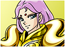
Mu de Áries |

Saori Kido (Atena) |
Seya de Pegasus |
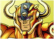
Aldebaran de Touro |
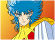
Abel |
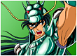
Shiryu de Dragão |
Saga de Gêmeos |
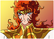
Apolo |
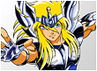
Hyoga de Cisne |
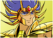
Máscara da Morte de Câncer |

Julian Solo (Poseidon) |
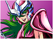
Shun de Andrômeda |
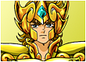
Aiolia de Leão |
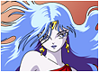
Éris |
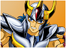
Ikki de Fênix |
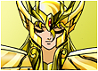
Shaka de Virgem |
Hades |
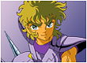
Jabu de Unicórnio |
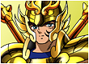
Dohko de Libra |
Artemis |
Ichi de Hidra |
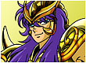
Milo de Escorpião |
Hypnos |
Geki de Urso |
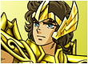
Aiolos de Sagitário |
Thanatos |
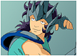
Nachi de Lobo |
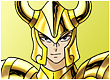
Shura de Capricórnio |
.png)
Loki (Deus) |
Ban de Leão Menor |
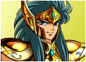
Camus de Aquário |
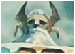
Odin |
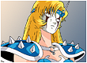
June de Camaleão |
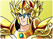
Afrodite de Peixes |
Carlos bjj |
Iragon de Gear |